Image、Text、RawImage 看起来千差万别，在 UGUI 眼里却是同一回事：每个 Graphic 交出一份由顶点和三角形组成的网格，再配一个材质和一张贴图。只要学会自己“交网格”，圆角矩形、圆环进度、雷达图、折线图、节点连线这些控件都不再需要美术切图；学会在别人的网格上动手脚，渐变、倾斜、镜像、逐字动画也都是几十行代码的事。
第 12 章讲过，一个 Graphic 被标记为“顶点脏”（SetVerticesDirty）之后，会被登记到 CanvasUpdateRegistry 的图形重建队列；在这一帧 Canvas 渲染之前，队列里的每个元素都会收到 Rebuild(CanvasUpdate.PreRender)，进而调用 UpdateGeometry()。本章关心的就是 UpdateGeometry 里面发生了什么。打开 Graphic.cs，核心只有十几行：
// 摘自 com.unity.ugui 1.0.0 Runtime/UI/Core/Graphic.cs
private void DoMeshGeneration()
{
if (rectTransform != null && rectTransform.rect.width >= 0 && rectTransform.rect.height >= 0)
OnPopulateMesh(s_VertexHelper);
else
s_VertexHelper.Clear(); // clear the vertex helper so invalid graphics dont draw.
var components = ListPool<Component>.Get();
GetComponents(typeof(IMeshModifier), components);
for (var i = 0; i < components.Count; i++)
((IMeshModifier)components[i]).ModifyMesh(s_VertexHelper);
ListPool<Component>.Release(components);
s_VertexHelper.FillMesh(workerMesh);
canvasRenderer.SetMesh(workerMesh);
}
这段代码把网格的一生分成了四步，后面整章都围绕这四步展开：
默认的 OnPopulateMesh 画的是一个铺满 RectTransform 的四边形，Image 在没有 Sprite 时走的就是它：
// 摘自 Graphic.cs：默认实现，一个四边形
protected virtual void OnPopulateMesh(VertexHelper vh)
{
var r = GetPixelAdjustedRect();
var v = new Vector4(r.x, r.y, r.x + r.width, r.y + r.height);
Color32 color32 = color;
vh.Clear();
vh.AddVert(new Vector3(v.x, v.y), color32, new Vector2(0f, 0f));
vh.AddVert(new Vector3(v.x, v.w), color32, new Vector2(0f, 1f));
vh.AddVert(new Vector3(v.z, v.w), color32, new Vector2(1f, 1f));
vh.AddVert(new Vector3(v.z, v.y), color32, new Vector2(1f, 0f));
vh.AddTriangle(0, 1, 2);
vh.AddTriangle(2, 3, 0);
}
这几行已经包含了写自定义 Graphic 需要的全部概念：顶点位置在哪个坐标系、颜色和 UV 是什么、三角形怎么用索引拼起来。下一节逐个拆开。
UGUI 的一个顶点用 UIVertex 结构表示。VertexHelper 内部并不存 UIVertex 数组，而是按字段拆成九个列表（位置、颜色、uv0~uv3、法线、切线、索引），这样 FillMesh 时可以直接 mesh.SetVertices(list)，少一次拷贝。各字段的用途如下：
GetPixelAdjustedRect() 返回的矩形就在这个坐标系里：轴心在中心时，矩形的 x、y 是负的半宽半高。
color顶点色（Color32）。UI/Default Shader 会把它乘到贴图颜色上，GPU 在三角形内部对它做插值——渐变“免费”的原因就在这里。
uv0贴图坐标，(0,0) 是贴图左下角、(1,1) 是右上角。Sprite 打进图集后，uv 只占图集的一小块，要用 DataUtility.GetOuterUV(sprite) 取它的实际范围。
uv1 ~ uv3额外的数据通道。默认 Canvas 不会把它们送进 Shader，要在 Canvas 的 Additional Shader Channels 里勾选。第 14 章会用 uv1 给每个元素传自己的参数。
normal / tangent法线和切线，只有受光照的 UI Shader 会用；普通 UI 保持默认值即可。
VertexHelper 常用的 API 一共就这几个：
currentVertCount，就知道这批顶点从几号开始。
PopulateUIVertex / SetUIVertex按索引读出、写回一个顶点。修改别人网格的效果组件主要靠它俩。
GetUIVertexStream / AddUIVertexTriangleStream把网格展开成“三角形流”（每 3 个顶点一个三角形，不再共用顶点）以及反过来。Shadow、Outline 用的就是它，13.5 节会看到它的代价。
Clear清空。共享的 VertexHelper 里可能还留着上一个 Graphic 的数据，一定要先清。
目标：继承 MaskableGraphic，重写 OnPopulateMesh，画出一个每个顶点颜色不同的三角形，直观看到“顶点 + 索引 + 插值”。
为什么继承 MaskableGraphic 而不是 Graphic？因为 Mask、RectMask2D 的支持都写在 MaskableGraphic 里（13.7 节详述），Image 和 Text 也都继承它。自己写的 UI 图形没有理由放弃这些能力。
把它挂到 Canvas 下的一个空物体上（），就能在 Scene 视图里看到三角形。几个要点：
GetPixelAdjustedRect() 推出来，而不是写死数字。这样改 RectTransform 的尺寸、锚点、轴心，三角形都会跟着变；当 Canvas 开了 Pixel Perfect 时它还会把矩形对齐到像素。color（Graphic 自带的 Color 字段）。这样 Inspector 里的 Color、Button 的 Color Tint 过渡、CanvasGroup 都能影响它——自定义 Graphic 最容易忘的就是这一步。Cull Off，顺时针、逆时针都会画出来。但在同一个组件里最好保持一致，将来换成带背面剔除的 Shader 时不至于一半消失。[RequireComponent(typeof(CanvasRenderer))]。不加的话，Graphic 会在第一次访问 canvasRenderer 时临时 AddComponent 一个；作者在批处理里搭景时就遇到过：场景销毁时 CanvasRenderer 先于 Graphic 被销毁，Graphic 的 OnDisable 再去访问它，报出 MissingComponentException。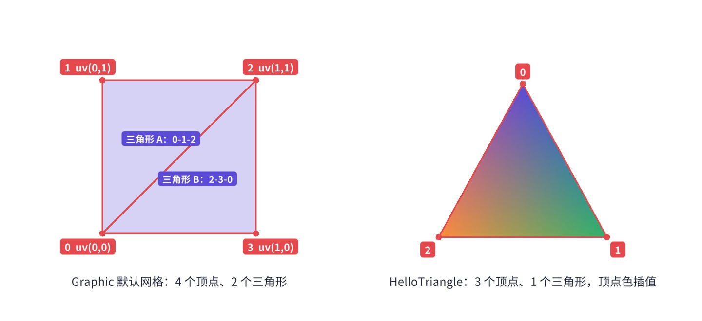
书里所有线框图都是配套工程里的 WireframeView 组件画的：它挂在目标的子物体上，调用 MeshProbe.Build 拿到目标“将要提交”的网格，再把每个三角形的三条边画成细线、每个顶点画成小圆点（alpha 为 0 的羽化顶点画成蓝色）。MeshProbe 复刻了 DoMeshGeneration 的前两步：
OnPopulateMesh 是 protected 的，这里用反射调用——这种写法只适合调试和教学，正式功能代码不要依赖反射调用引擎的保护成员。反射调用虚方法时会走虚分派，所以 Image、Text 和我们自己的子类都能得到各自的网格。
了解内置组件生成多少顶点，有助于估算自定义组件的开销。Image 的四种 Type 生成的网格各不相同：Simple 是 4 个顶点 2 个三角形；Sliced（九宫格）是 4×4 = 16 个顶点、最多 9 个四边形，勾掉 Fill Center 时中间那块不生成；Tiled 按平铺次数生成，每一块一个四边形，平铺很密时顶点数可以上千；Filled 的 Radial 360 模式会把矩形切成最多 4 个象限分别裁剪。对比之下，本章的圆角矩形在 4 段/角时约 41 个顶点，圆环一百多个，雷达图几百个——都在同一个数量级，不必因为“自己画网格”就担心性能，真正要在意的是重建频率。
本节的工具函数都遵循同一个约定：先记下起始索引，再加顶点，最后用“起始索引 + 偏移”连三角形。这样它们可以在一个 OnPopulateMesh 里任意组合、多次调用，互不干扰。
后面的组件会反复用到几种基本操作：加顶点并拿到索引、在两排顶点之间铺三角形带、从中心点铺扇形、画有粗细的折线。把它们收进一个静态类 UIMeshUtil，每个组件的 OnPopulateMesh 就能只关心“形状”，不关心“三角形怎么连”。
Quad 的顶点顺序和三角形 (0,1,2)、(2,3,0) 与 Graphic 默认实现完全相同，这不是巧合：很多现成的效果组件（包括 Unity 自己的 PositionAsUV1）都默认“每 4 个顶点是一个四边形”，保持同样的约定能减少意外。
三角形带（Strip）是本章出场最多的结构：两排数量相同的顶点 A₀…Aₙ、B₀…Bₙ，相邻两对之间拆成两个三角形。圆环是“内圈一排、外圈一排”，描边是“外轮廓一排、内轮廓一排”，抗锯齿羽化是“实色一排、透明一排”，粗线是“左边一排、右边一排”——全是同一个函数。扇形（Fan）则用于凸多边形的实心填充：从中心点出发，依次连向轮廓上相邻的两个点。
目标：一个不需要任何九宫格贴图的圆角矩形组件，圆角半径、每个角的分段数、描边宽度都能在 Inspector 里实时调；还可以给它一张 Sprite，把图片直接“裁”成圆角——圆角头像、圆角卡片封面不再需要 Mask。
圆角矩形的外轮廓由四段 90° 圆弧组成，圆心分别在四个角向内缩进一个半径的位置。每段圆弧用 segments 段折线逼近，于是整个轮廓是 4 × (segments + 1) 个点组成的凸多边形。凸多边形的实心填充最简单：在中心加一个顶点，用扇形连到轮廓上每一对相邻点。描边模式则再生成一圈内轮廓，两圈之间铺三角形带。
字段都通过属性访问，属性的 setter 里调用 SetVerticesDirty()（换 Sprite 时调用 SetAllDirty()，因为贴图也变了）。这是写 Graphic 的固定套路：改了影响形状的参数就标顶点脏，改了影响材质/贴图的参数就标材质脏，剩下的交给 CanvasUpdateRegistry 在本帧末尾统一重建，同一帧里改十次参数也只重建一次。
mainTexture 重写成“有 Sprite 就用它的贴图，否则用 s_WhiteTexture”。s_WhiteTexture 是 Graphic 里的一张 1×1 白图（Texture2D.whiteTexture），所有没有贴图的 Graphic 共用它，因此同一材质下的无图元素可以合批。
代码分三段：先生成外轮廓和每个点的法线（法线就是从圆角圆心指向该点的方向，后面羽化要沿它外扩）；再按模式铺实心扇形或描边带；最后加一圈 alpha 为 0 的羽化顶点。UV 由顶点在矩形中的相对位置换算到 Sprite 的 outer UV 范围，所以 Sprite 即使在图集里也能正确显示。
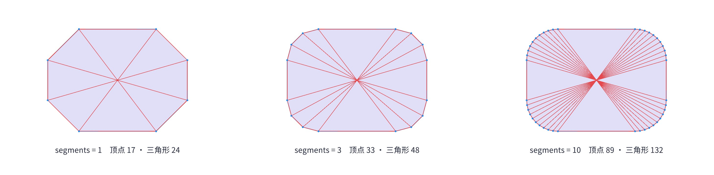
图 13-4 里，segments = 1 时每个角只有一段直线，圆角退化成了切角；到 3 段已经比较圆；10 段在任何尺寸下都看不出棱角，代价是顶点数从 17 涨到 89。一般的按钮、卡片（半径 20~40 像素）用 4~6 段足够；只有大圆角、胶囊形状才需要更多。也可以按半径自动算段数（比如每 6 像素弧长一段），这是一个很好的练习。
九宫格贴图的圆角边缘是美术画的半透明像素，天然平滑；而网格的边缘是几何边，光栅化时一个像素要么被三角形覆盖、要么不被覆盖，于是出现锯齿。MSAA 能缓解，但移动端 UI 往往关着它。本章组件用一个常见的小技巧：在轮廓外侧再加一圈顶点，位置向外偏移约 1 个像素，颜色相同但 alpha = 0。实色轮廓和透明轮廓之间铺一条窄窄的三角形带，GPU 在带内对 alpha 插值，边缘就有了约 1 像素的过渡。为了不改变视觉尺寸，实色边缘向内缩半个羽化宽度、透明边缘向外扩半个，羽化带正好“骑”在理论边界上。
这种效果在正常截图里很难看清，下面用一个“低分辨率实拍放大”的办法：让一台小相机把圆环渲染到 64×48 像素的 RenderTexture（关闭 MSAA），再用 RawImage 以点采样放大十几倍显示。每个色块就是真实的一个像素：
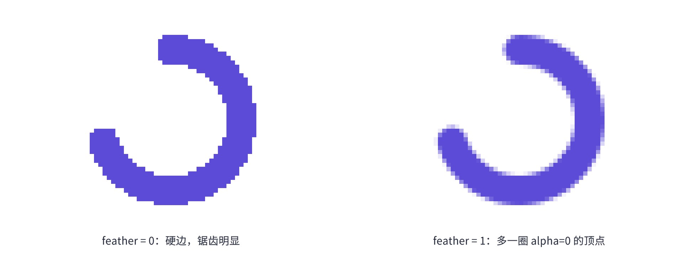
allowMSAA 设为 false 后才拍到真正的锯齿。分析 UI 边缘质量时，务必确认当前是否开着 MSAA。羽化宽度是本地单位，而“1 个像素”对应多少本地单位取决于 Canvas 的缩放系数。CanvasScaler 把 1920×1080 的参考分辨率缩放到 1280×720 的屏幕时，1 个本地单位只有 0.67 像素；要做到精确的 1 像素羽化，可以用 1f / canvas.scaleFactor 作为羽化宽度。本章组件取默认值 1，在常见缩放范围内效果都不错。
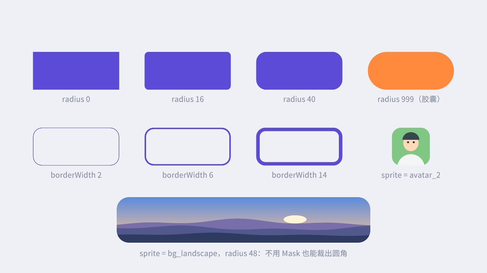
配套场景 Ch13_Playground 里可以拖动滑块实时改半径、段数，右侧文字会显示当前顶点数和三角形数，线框可以开关。
目标：技能冷却、下载进度、体力恢复都需要“圆环进度”。Image 的 Filled + Radial 360 可以做，但需要一张圆环贴图，两端是硬切口，颜色也不能沿弧渐变。我们写一个组件：底槽和进度弧画在同一个网格里，两端可以是半圆头，颜色可沿弧渐变；厚度大于等于半径时自动变成实心扇形，几个首尾相接就是饼图。
一段“环带”就是内外两条同心圆弧之间的三角形带。外弧上第 i 个点在角度 a₀ + (a₁ − a₀)·i/seg、半径 R 处，内弧对应点在同一角度、半径 r 处；顶点色按 i/seg 在起止颜色之间插值，就得到沿弧渐变。内半径为 0 时，内弧所有点都落在圆心，三角形带自然退化成扇形，不需要单独的代码分支。
角度的方向要注意：UI 坐标系 y 轴朝上，数学上角度增大是逆时针，所以“顺时针”要让角度递减（代码里 dir = -1）。起点默认 90°，也就是 12 点钟方向。段数按 fill 的比例缩减，避免 10% 的进度也生成整圈那么多顶点。
两处细节值得一说。第一，整圆（fill = 1）时最后一个点和第一个点位置重合，代码用的仍是“开放”的三角形带而不是首尾相连，因为渐变时首尾颜色不同，共用一个顶点会把颜色抹平。第二，圆头是一个半圆扇形，圆心落在环厚度的中线上、朝弧的切线方向鼓出去；它的颜色取端点颜色，所以渐变环两端的圆头颜色也是对的。
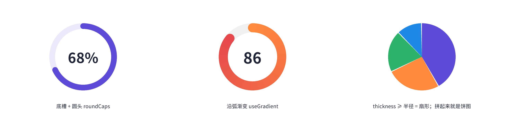
做冷却效果时，通常每帧把 fill 设成剩余时间比例。这会让这个元素每帧重建一次网格——一个圆环一百多个顶点，代价很小；但如果屏幕上同时有几十个冷却圈每帧在转，更省的做法是把进度交给 Shader（第 14 章的“顶点参数”方法），网格不动、只改一个数。
目标：角色属性、装备评分常用的雷达图：背景是同心多边形网格和辐条，数据区是一个半透明多边形，带描边和顶点圆点。维度数任意（≥ 3），全部画在一个网格里，一个 Draw Call。
第 i 根轴的方向是从起始角（默认 90°，正上方）开始顺时针每次转 360°/n。数据点 = 圆心 + 方向 × 半径 × 数值。网格线用后面要讲的 PolyLine 画闭合折线，辐条用简单的 Line。
数据多边形往往不是凸的（某个属性很低时会凹进去），但它对圆心是“星形”的：从圆心出发的每条射线只穿过边界一次。所以从圆心做扇形三角化依然正确，不需要通用的耳切法。顶点圆点先画一个略大的白点、再画一个小的彩色点，得到“带白边的圆点”，这也是组合简单图形的常用办法。
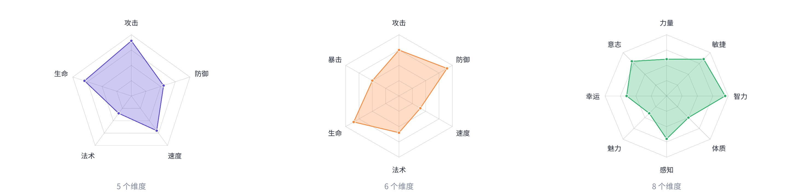
AxisDir(i) 算出来雷达图的数值变化常常要做动画（比如换装备时属性从旧值过渡到新值），每帧调用 SetValues 重建网格即可。第 15 章的补间系统可以直接驱动它：用 Tw.Value 从 0 到 1 插值，在回调里把每个维度设为新旧值的插值。
目标：战绩走势、充值曲线这类小图表：可选平滑曲线、面积渐变填充、数据点和水平网格线。核心难点是“画一条有粗细的折线”。
GPU 不认识“粗线”，只认识三角形。最朴素的办法是每一段画一个矩形，但相邻两段的矩形在拐角处会留下楔形缺口或互相重叠。标准做法是斜接（Miter）：每个折线点只生成左右两个顶点，偏移方向取前后两段法线的平分线，偏移长度是半宽除以 cos(半角)，这样两段的外边缘正好在拐角处相交。
拐角很尖时，cos(半角) 趋近于 0，斜接会变成一根很长的“飞刺”，所以长度系数用 miterLimit（默认 3 倍半宽）截断。每个点实际生成 4 个顶点：外羽化、左、右、外羽化，相邻点之间铺 3 条带共 6 个三角形，粗线也就自带了抗锯齿。
平滑用 Catmull-Rom 样条：它保证曲线经过每个数据点（贝塞尔曲线不经过控制点，不适合数据图表），每段的切线由前后两个数据点决定。首尾点没有“前一个/后一个”，就用自己补齐。面积填充是曲线上每一小段向下拉到底边的四边形，顶部顶点用 fillTop、底部用 fillBottom，中间靠顶点色插值得到竖直渐变——不需要任何渐变贴图。
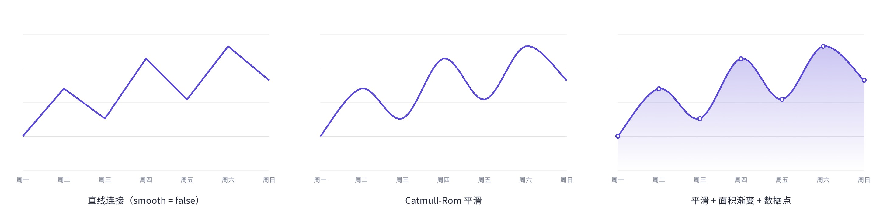
目标：节点编辑器、技能树、剧情流程图都需要“把两个节点用曲线连起来”，节点被拖动时连线跟着变。支持粗细、首尾渐变、虚线、末端箭头。
连线的两个端点来自别的 RectTransform（节点上的“端口”小圆点）。端口在别的物体下面，它们移动时本组件收不到任何通知，所以在 LateUpdate 里比较一下端口的世界坐标，变了才标脏：
选 LateUpdate 是因为拖拽、布局等改位置的逻辑大多发生在 Update 和事件回调里，LateUpdate 时位置已经是这一帧的最终值；标脏后，网格在本帧 Canvas 渲染前重建，不会慢一帧。
三次贝塞尔的四个控制点：P₀、P₃ 是两个端口中心（换算到本物体的本地坐标），P₁ 从 P₀ 水平向右伸出、P₂ 从 P₃ 水平向左伸出，伸出长度与水平距离成正比。这就是节点编辑器里常见的“S 形”连线：从输出口水平出发，水平进入输入口。虚线的做法是沿曲线弧长行走，在每个“实/虚”交界处精确切开，把实的部分收集成一小段折线逐段输出。作者最初按采样点判断实虚，结果长曲线的采样间距比虚线周期还长，大段虚线直接消失——精确切分才是可靠的写法。
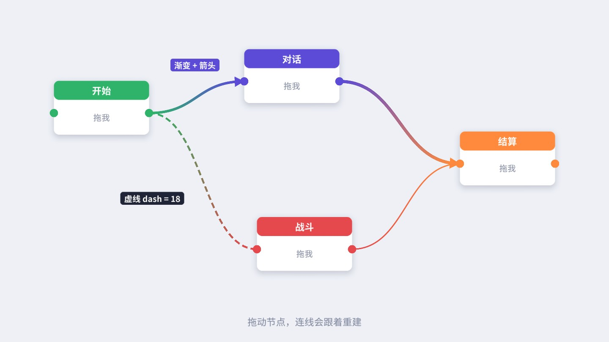
运行场景，拖动任意节点（节点上挂着一个最简单的 DragMove，拖拽事件的细节见第 11 章），连线实时重建。所有连线放在一个 Links 节点下、并排在节点之前，这样连线总是在节点下面；每条连线都是一个独立的 Graphic，但它们材质相同、贴图都是白图，能合成一个批次。
前面的组件都是“从零画”。另一类需求是“在已有的 Image、Text 上加点效果”：渐变、倾斜、镜像、描边。这就是 DoMeshGeneration 的第二步——IMeshModifier。UGUI 提供了一个基类 BaseMeshEffect，它帮你做了三件杂事：
// 摘自 com.unity.ugui 1.0.0 Runtime/UI/Core/VertexModifiers/BaseMeshEffect.cs（节选）
[ExecuteAlways]
public abstract class BaseMeshEffect : UIBehaviour, IMeshModifier
{
protected Graphic graphic { get { ... GetComponent<Graphic>() ... } }
protected override void OnEnable() { base.OnEnable(); if (graphic != null) graphic.SetVerticesDirty(); }
protected override void OnDisable() { if (graphic != null) graphic.SetVerticesDirty(); base.OnDisable(); }
protected override void OnDidApplyAnimationProperties() { ... graphic.SetVerticesDirty(); ... }
public abstract void ModifyMesh(VertexHelper vh);
}
启用、禁用、被 Animator 改了参数时，它都会让所在的 Graphic 重建网格；子类只需实现 ModifyMesh(VertexHelper vh)。同一物体上挂多个效果时，按组件在 Inspector 里的顺序依次调用，每个效果拿到的是上一个效果修改后的结果。
顶点渐变是 BaseMeshEffect 最好的入门例子：顶点位置一个不动，只按顶点在包围盒中的相对位置改颜色。
两遍循环：第一遍求所有顶点的包围盒，第二遍按相对位置插值颜色。默认与原顶点色相乘，所以 Graphic 的 Color 和 Button 的状态色依然有效。要注意渐变只发生在顶点之间：Simple 模式的 Image 只有 4 个顶点，竖直渐变没问题，但想要“中间亮、两头暗”的三段渐变就做不到——那需要更多顶点或交给 Shader。旧版 Text 每个字 4 个顶点、包围盒是整段文字，所以渐变跨越整个标题，而不是每个字各自渐变一遍。
倾斜就是一个剪切变换：x 加上 (y − 中心 y) × tan(角度)。顶点数不变，几乎零开销，平行四边形按钮、“假斜体”都能用它做。
镜像解决的是一个实际的资源问题：对称的边框、徽章、标题底板，美术只需画左半边，右半边由网格镜像出来，贴图内存省一半。做法是取出三角形流，把原网格压到左半边，再复制一份关于中线翻转放到右半边：
镜像后的三角形绕向与原来相反，但前面说过 UI Shader 不做背面剔除，所以不影响显示。
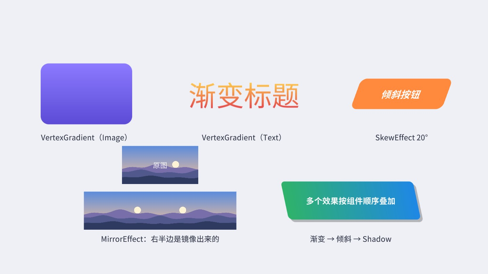
图中倾斜按钮里的文字是 TMP，它不受 SkewEffect 影响（原因见 13.6 节），所以给文字单独设置了斜体。右下角的组合效果是“渐变 → 倾斜 → Shadow”三个组件叠加：Shadow 复制的是已经渐变、倾斜过的网格，所以阴影也是倾斜的；如果把 Shadow 拖到最上面，阴影就会是正的矩形。效果组件的顺序有意义，调整顺序可以得到不同结果。
UGUI 自带的 Shadow 和 Outline 也是 BaseMeshEffect。读一下源码就知道它们是怎么“画出”阴影和描边的：
// 摘自 Runtime/UI/Core/VertexModifiers/Shadow.cs（节选）
public override void ModifyMesh(VertexHelper vh)
{
var output = ListPool<UIVertex>.Get();
vh.GetUIVertexStream(output); // 展开成三角形流
ApplyShadow(output, effectColor, 0, output.Count, effectDistance.x, effectDistance.y);
vh.Clear();
vh.AddUIVertexTriangleStream(output);
ListPool<UIVertex>.Release(output);
}
// 摘自 Outline.cs：同一份网格偏移四次
ApplyShadowZeroAlloc(verts, effectColor, start, verts.Count, effectDistance.x, effectDistance.y);
ApplyShadowZeroAlloc(verts, effectColor, start, verts.Count, effectDistance.x, -effectDistance.y);
ApplyShadowZeroAlloc(verts, effectColor, start, verts.Count, -effectDistance.x, effectDistance.y);
ApplyShadowZeroAlloc(verts, effectColor, start, verts.Count, -effectDistance.x, -effectDistance.y);
Shadow 把整份网格复制一份、偏移、改成阴影色；Outline 继承 Shadow，向四个对角方向各复制一份——描边其实是“四个错开的影子”。代价有两层：
GetUIVertexStream 把共享顶点的索引网格拆成“每三个顶点一个三角形”。一个字原本是 4 个顶点 2 个三角形，展开后变成 6 个顶点。所以 Outline 后每个字是 6 × 5 = 30 个顶点，是原来的 7.5 倍，而不是直觉上的 5 倍。用前面的 MeshProbe 实测验证一下。下图每列是同一个旧版 Text（两个字母），分别挂不同的效果：
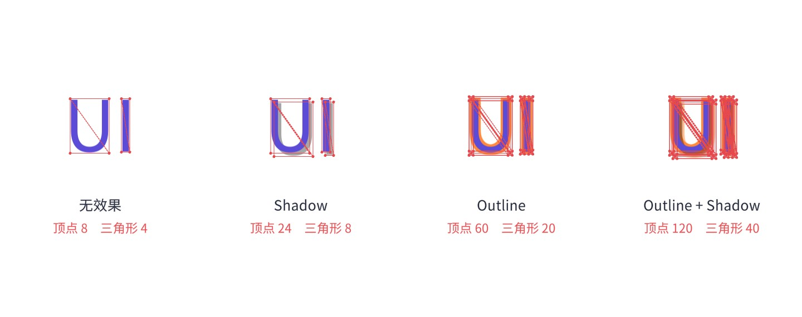
再用 OutlineBench 测时间：同一段 23 个可见字的旧版 Text，分别切换四种配置，用 Stopwatch 统计“标脏 + Rebuild(PreRender)”5000 次的平均耗时——这正是 CanvasUpdateRegistry 每帧对一个脏 Graphic 做的事：
| 配置（23 个可见字） | 顶点数 | 三角形数 | 每次重建耗时 |
|---|---|---|---|
| 无效果 | 92 | 46 | 16.0 µs |
| Shadow | 276 | 92 | 37.9 µs |
| Outline | 690 | 230 | 95.0 µs |
| Outline + Shadow | 1380 | 460 | 195.5 µs |
作者环境：Apple M 系列 Mac / Unity 2022.3.62f3 / 编辑器批处理模式，绝对值仅供参考，在手机上会慢数倍。值得看的是比例：Outline 让单个文本的重建耗时变成原来的约 6 倍，加上 Shadow 约 12 倍，而且每次文字内容变化都要付一次。一个每帧刷新的计时器、伤害飘字、聊天列表里的每一行，如果都挂 Outline，这笔开销会实实在在出现在 Profiler 的 Canvas.SendWillRenderCanvases 里。顶点多了还会增加 Canvas 合批和 GPU 的顶点处理量。
把 VertexGradient 挂到 TextMeshProUGUI 上，会发现没有任何效果。原因是 TMP 虽然继承了 MaskableGraphic，却完全接管了网格生成：它在自己的 GenerateTextMesh 里排版，把结果写进 textInfo.meshInfo[]，再直接 canvasRenderer.SetMesh，从不经过 DoMeshGeneration，也就不会调用 IMeshModifier。要改 TMP 的网格，就要按 TMP 的方式来：
textInfo.characterInfo[i] 是第 i 个字符的信息：是否可见（空格不可见，没有顶点）、用的第几个材质（materialReferenceIndex，回退字体、表情图集会用到别的材质）、它的 4 个顶点从第几号开始（vertexIndex）。textInfo.meshInfo[m].vertices / colors32 是第 m 个子网格的顶点数组，改它就是改网格。UpdateVertexData(flags) 只上传顶点（和颜色），不重新排版——这是逐字动画便宜的关键。难点在于“原始顶点从哪来”：每帧都要从原始位置出发计算偏移，否则偏移会累加。TMP 每次重新生成网格时会在上传之前触发 OnPreRenderText 事件，这时 textInfo 里正好是干净的原始顶点：
在这个回调里先把顶点和颜色各拷一份，然后立刻按当前时间把动画套上去。这样不论什么原因触发了重新排版（改文字、改字号、RectTransform 尺寸变化、语言切换），缓存都会自动更新，动画也不会闪回原样一帧。每帧的推进则只做“从缓存计算 → 写入 → 上传”：
四种模式都只是对每个字的 4 个顶点做“绕字中心缩放 + 平移”和改颜色：波浪是按字序号错开相位的正弦；抖动用“字序号 + 时间片”做种子的哈希，同一时刻结果固定（截图和回放都可复现）；逐字弹出每个字用 1/speed 秒从 0 缩放到 1、带 OutBack 回弹；彩虹按字序号和时间换色相。
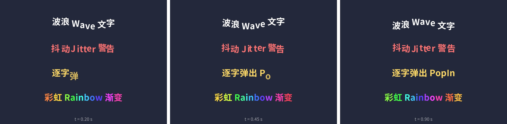
Evaluate(t)Evaluate(t) 是本书反复使用的写法：把“时间 → 状态”做成可以直接调用的方法，运行时由 Update 推进时间，调试、截图、和其他动画同步时直接跳到任意时刻。第 15 章的补间系统会把这个思路贯彻到底。性能上，逐字动画每帧要遍历所有可见字符并上传整个顶点数组，几十个字毫无压力；但如果对一大段文本（比如几千字的公告）做持续动画，就应该只动需要动的那一行，或者干脆不做。TMP 的 maxVisibleCharacters（第 5 章打字机效果）只改可见字符数、不改顶点，比逐字弹出便宜得多，两者可以按需选择。
本章所有组件都继承 MaskableGraphic，所以放到 Mask 或 RectMask2D 下面会被正确裁剪，一行额外代码都不用写。原因是两种遮罩都不关心网格的具体形状：Mask 通过 IMaterialModifier 把子元素的材质换成带模板测试的副本；RectMask2D 通过 IClippable 把裁剪矩形交给 CanvasRenderer，在 Shader 里逐像素裁掉矩形外的部分。这两条路都由 MaskableGraphic 完成，原理和源码在第 14 章详细展开。
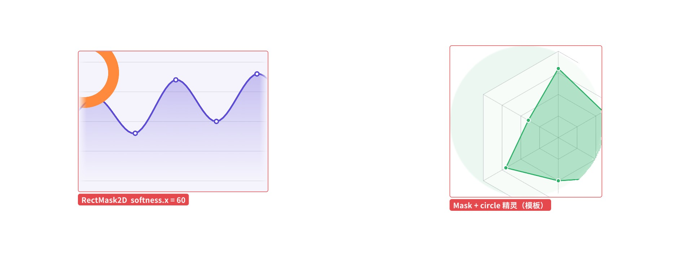
只有一种情况需要自己处理：自定义了材质（比如重写 materialForRendering 或用了自己的 Shader）。这时 Shader 里必须保留 Stencil 属性和 UNITY_UI_CLIP_RECT 分支，否则遮罩失效——第 14 章会专门做一组对照实验。
GraphicRaycaster 判断一个 Graphic 是否被点中分两步：先用 RectTransform 的矩形粗筛（RectangleContainsScreenPoint），再调用 Graphic.Raycast。后者会沿着层级往上，对每个实现了 ICanvasRaycastFilter 的组件调用 IsRaycastLocationValid，任何一个返回 false 都算没点中：
// 摘自 Graphic.cs：Raycast 的核心循环（节选）
var filter = components[i] as ICanvasRaycastFilter;
if (filter == null) continue;
...
raycastValid = filter.IsRaycastLocationValid(sp, eventCamera);
if (!raycastValid) { ListPool<Component>.Release(components); return false; }
Image 的 alphaHitTestMinimumThreshold 就是这样实现的（读贴图像素的 alpha）。我们的 Graphic 有精确的数学形状，判断起来更便宜：RingProgress 只认环带内的点（可选只认已填充的弧段），RadarChart 只认数据多边形内部的点（射线法判断点在多边形内）。
目标：长按弹出的环形快捷菜单。6 个扇区各是一个 RingProgress（fill = 1/6，起始角依次相差 60°），扇区之间留一点缝隙。鼠标指向哪个扇区，哪个扇区高亮、圆心显示它的名字，点击触发对应功能。
难点在命中：6 个扇区的 RectTransform 完全一样大、完全重叠，按矩形判断的话永远是层级最靠后的那个被点中。打开 RingProgress 的 raycastFilledOnly 后，IsRaycastLocationValid 只在点落在自己那 60° 的环带内时返回 true，射线就会穿过其他扇区，落到真正被指着的那一块上。
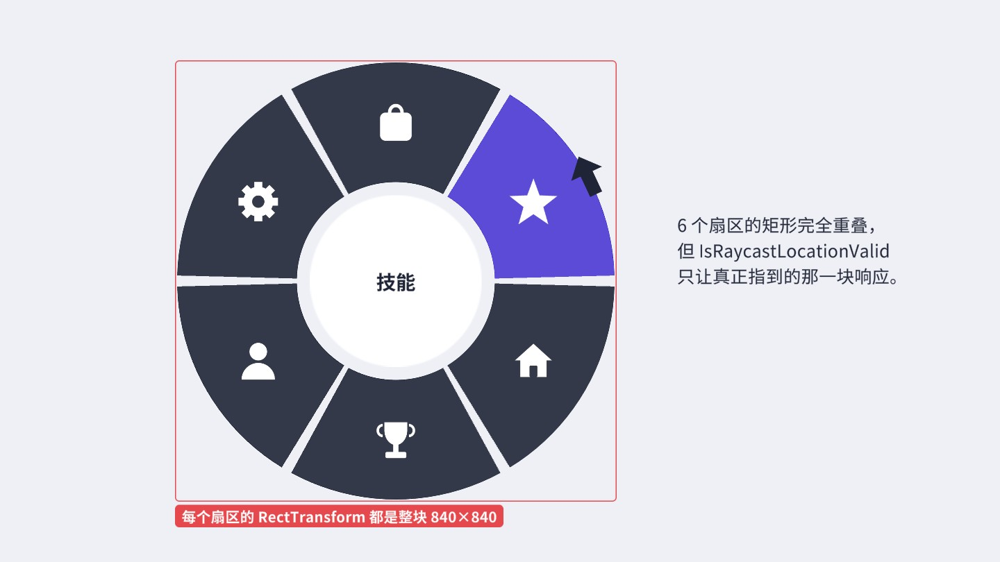
扇区上的图标在扇区之后创建（层级更靠下，画在上面），但图标的 Raycast Target 是关闭的，不会挡住射线；圆心的白色圆盘同样关闭了 Raycast Target。如果你发现某个扇区“点不到”，第一件事就是检查它上面有没有开着 Raycast Target 的元素（第 21 章有专门的排查工具）。
index = Mathf.FloorToInt(Mathf.Repeat(90 - angle + 30, 360) / 60)。命中计算和绘制共用同一套角度约定，两种输入方式就不会对不上。写自定义 Graphic 时，最常见的现象是“什么都没画出来”或者“画出来了但不对”。按下面的顺序排查，基本能覆盖九成的情况：
rect.width >= 0 && rect.height >= 0，负数时直接清空网格；而尺寸为 0 时 OnPopulateMesh 虽然会被调用，但用 rect 推导出的顶点全部挤在一个点上。用 Stretch 锚点的元素，父物体尺寸不对时很容易出现这种情况。currentVertCount，索引从 0 而不是从起始序号算起，三角形就会连到前面那批顶点上。PolyLine、Dot 这些工具函数都先取起始索引再加顶点，就是为了避免这类错误。cullTransparentMesh 打开时，顶点色全透明的网格不会绘制。需要在矩形外画东西时，最稳妥的做法是把 RectTransform 设得足够大，在内部画。另外两个容易忽略的细节：其一，自定义 Graphic 默认 raycastTarget = true，纯装饰性的图表、连线应该关掉，否则会挡住下面的按钮，也会增加射线检测的开销（第 20 章）；其二，如果组件在 OnPopulateMesh 里读取了其他物体的信息（如 BezierLink 读端口位置），一定要考虑那些物体变化时如何通知自己重建，否则会出现“拖动节点，连线不动”的问题。
自定义 Graphic 很强大，但它把“画图”的成本从美术的贴图转移到了 CPU 的网格生成上，用之前心里要有几笔账：
List 复用轮廓点，避免每次重建产生垃圾。new Vector2[]、LINQ、字符串拼接都不该出现在这里。RadarChart 的 m_Pts、RoundedRect 的 s_Outer 都是这个目的。s_WhiteTexture 和默认材质，彼此之间、以及与其他无图 UI 之间可以合批。给 RoundedRect 设了 Sprite 后，它就按那张贴图参与合批；这些 Sprite 打进同一个图集，就又能合在一起。[ExecuteAlways]，在 Inspector 里改字段会触发 OnValidate → SetAllDirty，编辑器里即改即见。自定义字段如果绕过属性直接改（比如 SerializedObject），也会走 OnValidate，不必担心预览不刷新。UVScroll : BaseMeshEffect，给 Image 的 uv0 加一个偏移，配合 Repeat 模式的贴图做“流动的条纹”进度条；再思考：每帧改偏移会重建网格，有没有更便宜的做法？<link> 标签，让富文本中被标记的关键词单独跳动。